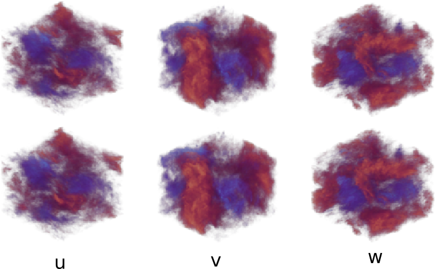
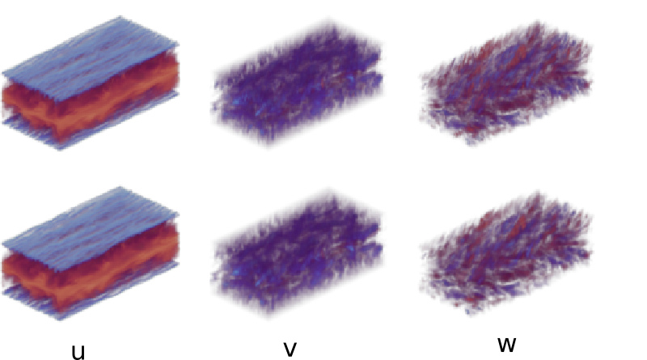
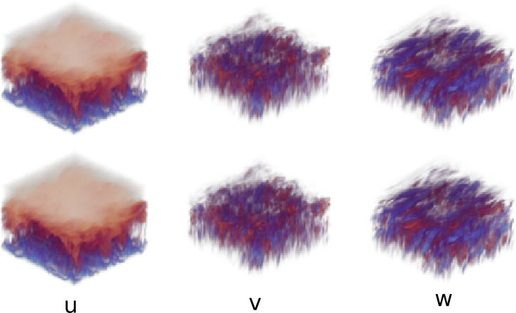
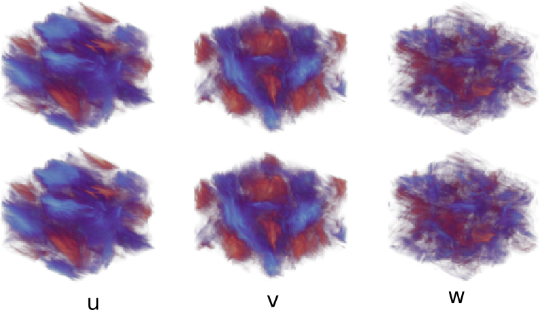

Data is heavy
High-resolution 3D trajectories quickly overwhelm storage and data-loading pipelines.
Tadpole is a foundation model for three-dimensional PDEs. It learns a reusable encoding of physical structure through autoencoding and then adapts it for reconstruction, dynamics, and generation.
The starting point
“Given the past, what happens next?”
That is a natural objective, but the same state can evolve differently under different equations, boundary conditions, and parameters. In 3D, the simulations needed to learn all those possibilities are also enormous.
High-resolution 3D trajectories quickly overwhelm storage and data-loading pipelines.
Every system brings its own variables, spatial scale, and governing dynamics.
Training only for time evolution can bind a representation to a single kind of task.
The Tadpole idea
Tadpole is pre-trained as a variational autoencoder. It encodes a single 3D state into a compact latent representation, then reconstructs the original field. This makes pre-training about spatial structure, not about committing to one system’s evolution.
Online learning
GPU solvers generate synthetic PDE data while the network trains. A multi-stage buffer keeps simulation, communication, and learning moving in parallel, removing the need to precompute and repeatedly load a giant static dataset.
*Measured against offline training in the authors’ high-speed SSD environment.
A shared visual language
Tadpole splits variables into individual fields and learns from random 3D crops. At inference, the same model can process different channel counts and domain sizes, including resolutions far beyond those seen in pre-training.

[4 × 1024 × 1024 × 1024]

[3 × 96 × 96 × 192]

[4 × 224 × 224 × 224]

[10 × 512 × 512 × 512]
Visualizations of Tadpole-B zero-shot reconstruction on different datasets (up: ground truth, down: zero-shot reconstruction).
crop size during pre-training
largest evaluated spatial resolution
What the representation becomes
Tadpole-DFT adds latent transformations, restored skip connections, and LoRA to learn temporal evolution efficiently.
Use the pre-trained model directly on unseen systems, or fine-tune it for sharper domain-specific reconstructions.
Train a flow-matching model in the compact latent space, then decode new samples into full 3D physical fields.
Dynamics fine-tuning
Tadpole-DFT preserves the pre-trained backbone while adding only the capacity needed for dynamics. It performs best among the models compared and achieves superior performance compared to the model trained from scratch.
Summary
A variational autoencoder compresses and reconstructs each state through a shared latent space.
GPU-based pseudo-spectral solvers continuously generate diverse 3D PDE states.
Variables become single-channel samples; random local crops unify different systems and sizes.
Zero-shot inference, LoRA, and task-specific modules turn the representation into downstream tools.
@inproceedings{liu2026tadpole,
title = {Tadpole: Autoencoders as Foundation Models
for 3D PDEs with Online Learning},
author = {Qiang Liu and Felix Koehler and Benjamin Holzschuh and Nils Thuerey},
booktitle = {Advances in Neural Information Processing Systems},
year = {2026}
}